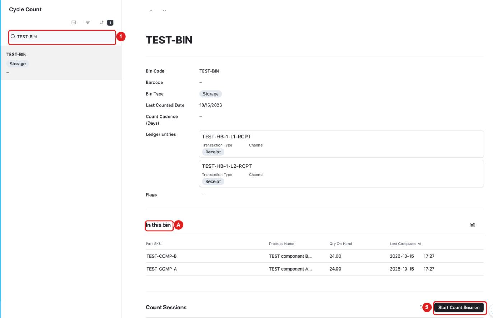
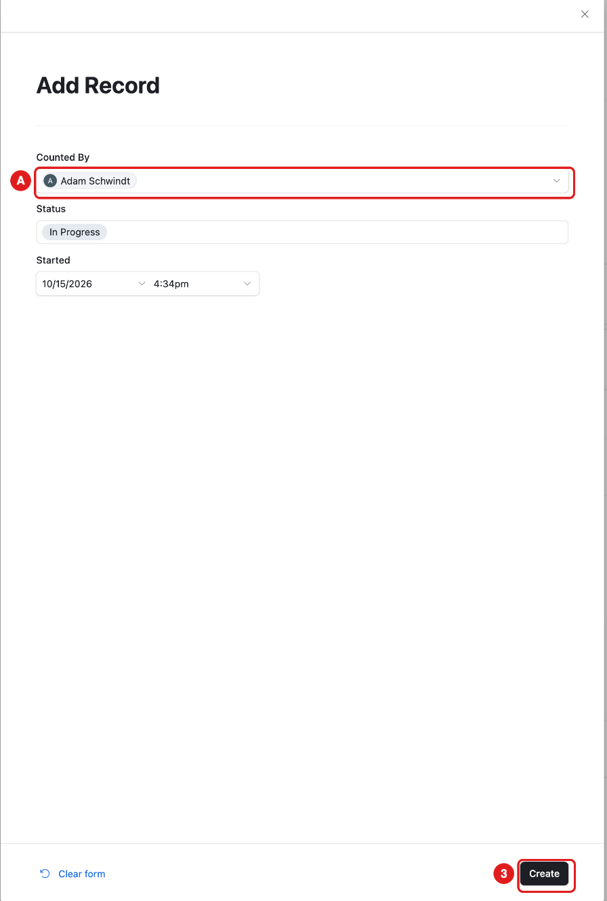
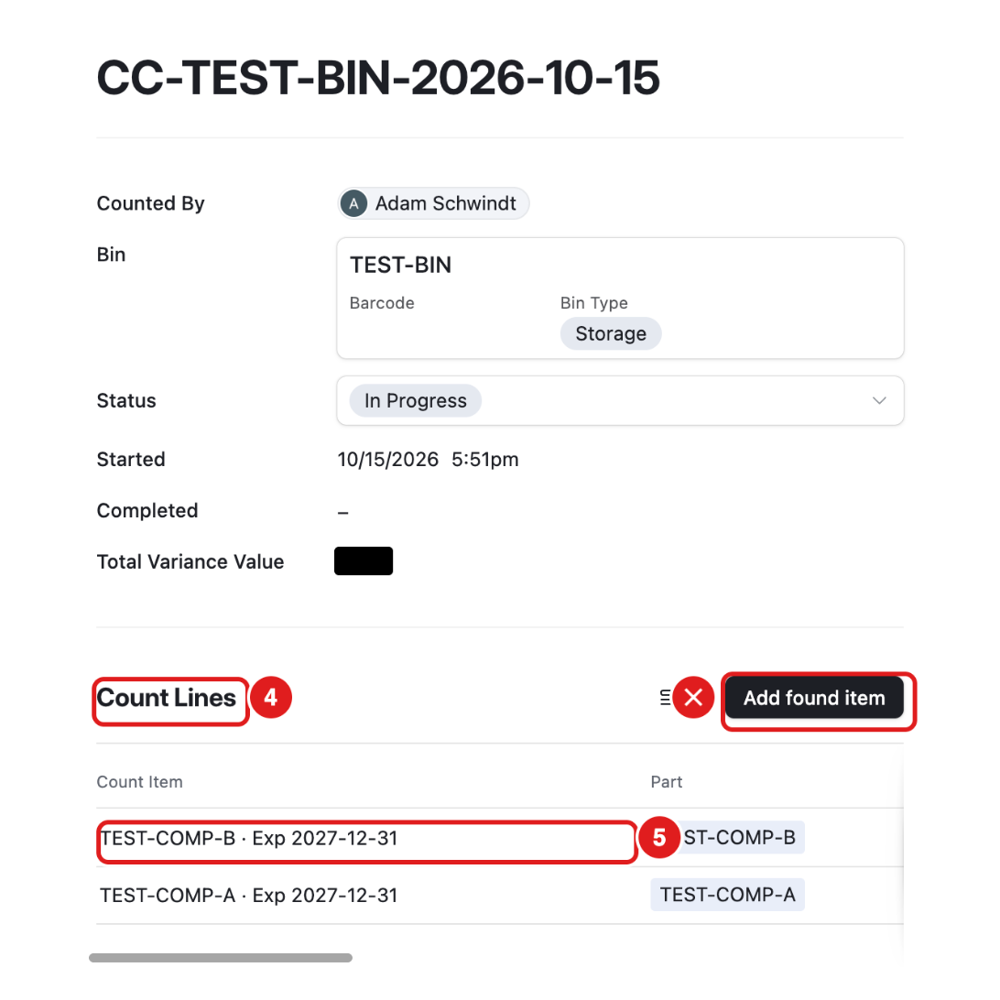
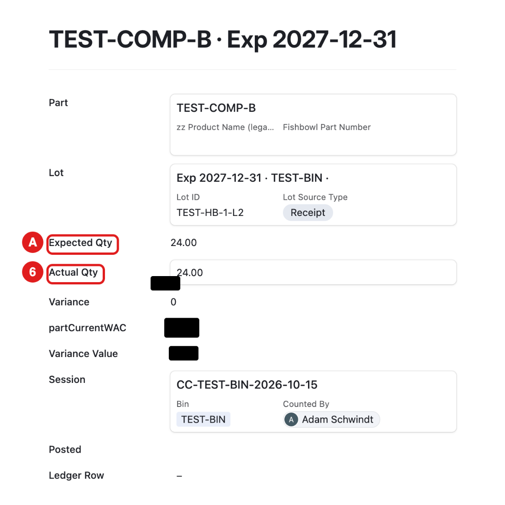
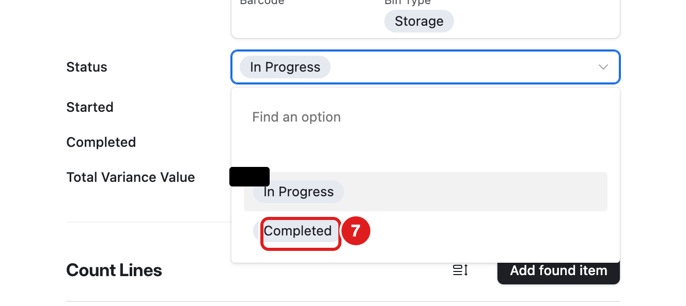
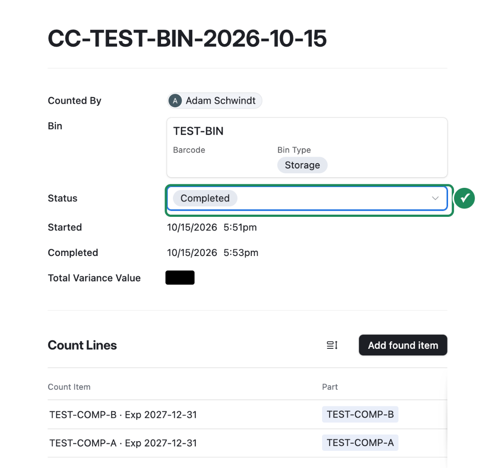
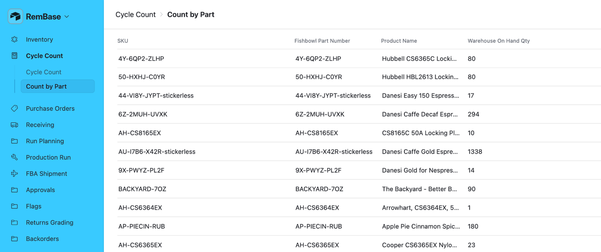

What this page is for
A cycle count means you count what is really in one bin and compare it with RemBase.
Who uses it: Chad and Sabith.
Before December 1, do real counts in Fishbowl. In RemBase, practice only on TEST-BIN.
Sub-pages
| Sub-page | What it is for |
|---|---|
| Cycle Count | All bins. Open a bin to count it. |
| Count by Part | All parts with their warehouse stock. Read-only. |
Task: start a count
Click Cycle Count in the menu.
Type the bin name in Search (1). For practice: TEST-BIN.
Click the bin in the list.
Scroll down to Count Sessions. Click Start Count Session (2).

A form opens. Counted By shows your name (A). Click Create (3).

The new session appears under Count Sessions. Click it.


Task: enter your count
RemBase makes one count line (4) for each part and lot in the bin. Expected is what RemBase thinks is there.

Open the session.
Click each line under Count Lines.
Count that part in the bin.
Type the number you counted in Actual Qty (6). Expected Qty (A) shows what RemBase thinks is there.

Close the line (✕ at the top right). Do the same for every line.
When every line has a number, click Status and choose Completed (7).



Count every line. If you leave a line empty, RemBase skips it and changes nothing, so that part is not counted at all.
- If you find a part that has no line, do not use Add found item. Write it down and tell Becca.
What you should see

- The session status is Completed, with the time it was completed.
- The bin shows a new Last Counted Date.
- If your count was different, RemBase makes a Flag for Becca and changes the stock:
- a small difference (under the approval limit) changes the stock right away;
- a big difference waits in Approvals until Becca or Adam says yes.
Count by Part

This list shows each part and its warehouse stock. Use it to check a number. It is read-only.
Common mistakes
- Counting the wrong bin. Check the bin name at the top before you count.
- Leaving a line empty. RemBase skips it, so that part is not counted.
- Counting cases instead of units. Count single units.
- Starting two sessions for one bin. Look at Count Sessions first.